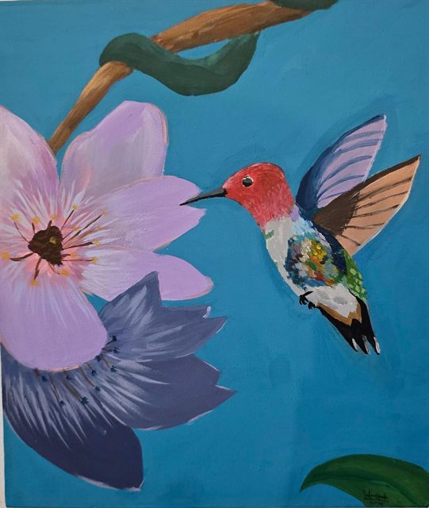

Saltar al contenido
Meraki
Academia Arte-Café
← Volver
Artista
Salome Cifuentes
Sobre el artista
Su obra va de Van Gogh a un colibrí entre flores, con colores intensos.
Obras · 2 obras
Vincent Van Gogh
Salome Cifuentes

Colibrí y flores
Salome Cifuentes